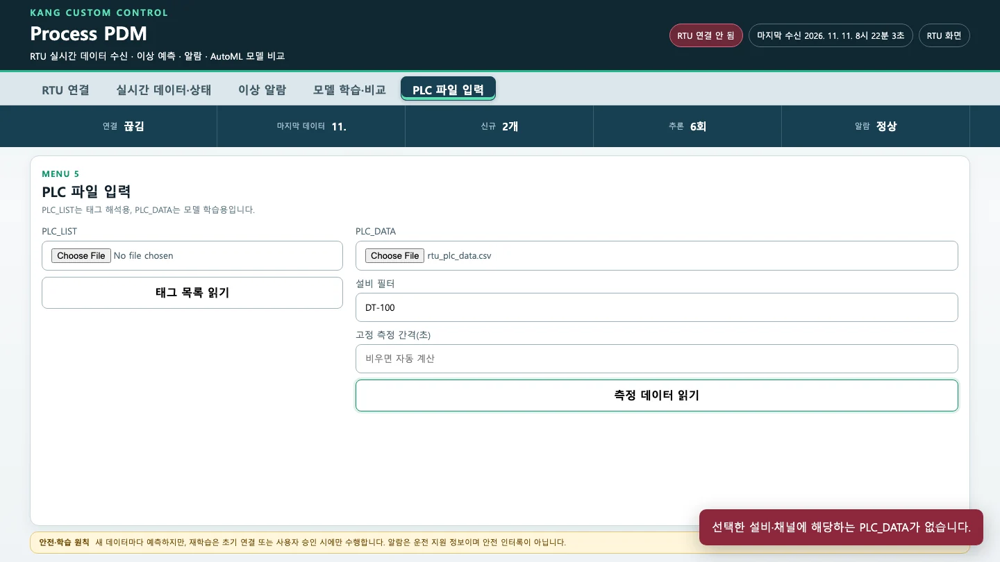
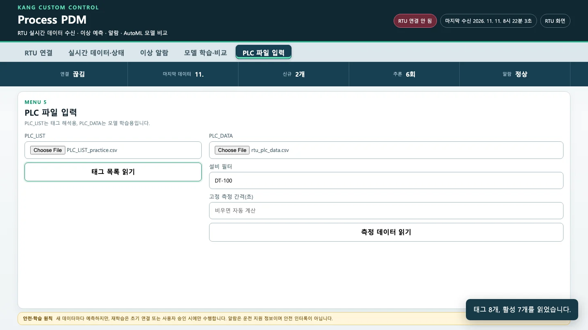
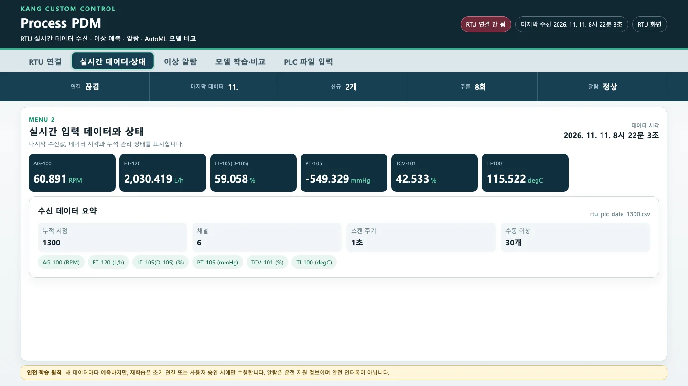
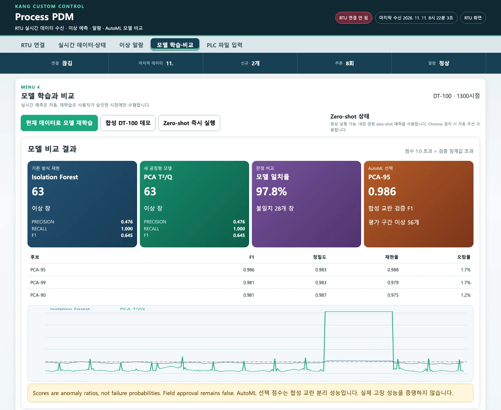

실제 현장 데이터는 RTU가 아니라 PLC_LIST와 PLC_DATA 파일로 들어옵니다. RTU가 내보낸 PLC_DATA CSV와 연습용 PLC_LIST로 그 길을 따라가 봅니다. 설비 필터는 PLC_LIST를 먼저 읽어야 동작합니다. 모든 채널이 갖춰진 시점만 쓰므로, 현장 데이터를 넣기 전에 확인할 것도 정리합니다.
무엇을 · 왜#
「PLC 파일 입력」 메뉴에서는 두 단계를 거칩니다. 태그 목록 읽기(PLC_LIST)는 태그 번호에 이름·단위·공정 설명을 연결합니다. 측정 데이터 읽기(PLC_DATA)는 시간별 값을 읽어 모델이 쓸 표(시점 × 채널)로 바꿉니다. 파일을 읽으면 RTU 연결은 끊깁니다. 두 데이터가 섞이지 않게 하려는 것입니다. 학습은 「모델 학습·비교」의 현재 데이터로 모델 재학습으로 합니다.
PLC_DATA를 읽을 때 프로그램이 지키는 규칙은 다음과 같습니다(코드에서 확인했습니다).
| 규칙 | 내용 |
|---|---|
| 파일 형식 | CSV(UTF-8, CP949, EUC-KR 순서로 시도), XLSX, XLS. 100 MB 이하 |
| 필수 열 | PLC_LIST: PTYPE, IDX, PNAME / PLC_DATA: INTIME, PTYPE, IDX, VALUE |
| 태그 잇기 | PTYPE + IDX가 같은 행끼리 PLC_LIST와 잇습니다 |
| 설비 필터 | 입력한 글자(예: DT-100)가 그 태그의 PNAME이나 PLC_LIST의 DETAIL에 들어 있는 행만 씁니다 |
| 시점 | 같은 INTIME의 행을 한 시점으로 묶고, 선택한 모든 채널이 있는 시점만 씁니다. 빈 값을 채우는 보간은 하지 않습니다 |
| 최소·최대 | 완전한 시점이 50개 이상이어야 파일을 읽을 수 있고, 학습에는 150개 이상이 필요합니다. 채널은 32개까지입니다 |
| 측정 간격 | 비워 두면 시점 간격의 중앙값입니다. 이 값이 기울기(초당) 계산에 쓰입니다 |
| 단위 | 한 채널의 UNIT이 파일 안에서 바뀌면 거부합니다 |
| 라벨 | LABEL이나 FAILURE_LABEL(0/1)이 있으면 정밀도·재현율 계산에만 씁니다. 학습에는 쓰지 않습니다 |
| 기존 방식 채널 | 이름이 TI·PT로 시작하거나 「온도」「압력」이 들어간 채널(최대 4개). 없으면 앞의 채널 4개 |
연습용 PLC_LIST#
배포본의 태그 목록은 실제 현장에서 쓰는 자료입니다. 그래서 이 교재에서는 같은 열 구조로 RTU의 일곱 태그와 예비 태그 하나만 담은 연습용 목록을 씁니다. 아래 내용을 PLC_LIST_practice.csv로 저장하세요(UTF-8).
PTYPE,IDX,SEQ,PNAME,ADDR,BITLENGTH,DATATYPE,PLCScale_min,PLCScale_max,MESScale_min,MESScale_max,UNIT,DETAIL
TI,51,1,TI-100,%MW250,16bit,short,0,16000,0,200,degC,반응기 DT-100 온도
PT,120,1,PT-105,%MW320,16bit,short,0,16000,-760,0,mmHg,반응기 DT-100 진공 압력
FT,103,1,FT-120,%MW303,16bit,ushort,0,16000,0,5000,L/h,반응기 DT-100 투입 유량
LT,41,1,LT-105(D-105),%MW240,16bit,ushort,0,16000,0,100,%,반응기 DT-100 투입 용기 레벨
컨트롤밸브,140,1,TCV-101,%MW340,16bit,ushort,0,16000,0,100,%,반응기 DT-100 열매 공급 밸브
RPM,160,1,AG-100,%MW360,16bit,ushort,0,16000,0,120,RPM,반응기 DT-100 교반기 회전수
ETC,171,1,NT-1000 : PH,%MW372,16bit,ushort,0,16000,0,14,pH,중화조 NT-1000 pH
TI,52,2,,%MW251,16bit,spare,0,16000,0,200,degC,예비
PTYPE과 IDX는 RTU가 내보내는 PLC_DATA와 같은 값입니다. 마지막 줄은 DATATYPE이 spare이고 이름이 비어 있어 「사용 중」에서 빠집니다.
따라 하기#
-
학습에 쓸 PLC_DATA를 RTU에서 받습니다. RTU 화면의 PLC_DATA CSV를 누르면 RTU가 보관 중인 이력(최대 1,440시점)이 내려받아집니다. 한 시점이 일곱 행이고, 열은
INTIME, PTYPE, IDX, SEQ, PNAME, ADDR, BITLENGTH, PLCBYTE, PLCVALUE, VALUE, UNIT, LABEL입니다.이번에는 깨끗한 실습 파일이 필요해 RTU를 정상으로 900초 운전한 뒤, 화면 기본값의 수동 이상을 30초 넣었습니다. 이후 다시 정상으로 70초 운전한 뒤 파일을 내려받았습니다. 초기 이력 300시점을 더해 1,300시점, 9,100행입니다. 이상이 파일의 뒤쪽(평가 구간)에만 있도록 만든 것입니다. 그 이유는 5장에서 다룹니다.
-
「PLC 파일 입력」 메뉴에서 PLC_LIST 없이 PLC_DATA를 고르고 설비 필터에
DT-100을 넣은 뒤 측정 데이터 읽기를 누릅니다. 「선택한 설비·채널에 해당하는 PLC_DATA가 없습니다」가 뜹니다.
PLC_LIST 없이 설비 필터 DT-100으로 읽었을 때의 오류 「선택한 설비·채널에 해당하는 PLC_DATA가 없습니다」 RTU의 태그 이름(
TI-100,PT-105…)에는DT-100이라는 글자가 없습니다. 설비 이름은 PLC_LIST의DETAIL에만 있습니다. 그래서 목록을 먼저 읽어야 필터가 동작합니다. 배포본 문서의 「PLC_LIST를 읽고 → PLC_DATA를 고르고 → 설비 필터」 순서를 지켜야 합니다. -
PLC_LIST에
PLC_LIST_practice.csv를 고르고 태그 목록 읽기를 누릅니다. 「태그 8개, 활성 7개를 읽었습니다」가 뜹니다.
연습용 PLC_LIST를 읽은 뒤의 알림 「태그 8개, 활성 7개를 읽었습니다」 배포본에 들어 있는 현장 태그 목록(XLS)을 같은 방법으로 읽으면 「태그 171개, 활성 151개」가 나옵니다. 교육 자료 4쪽의 숫자와 같습니다. macOS에서도
xlrd로 읽혔습니다. -
다시 PLC_DATA(필터
DT-100)로 측정 데이터 읽기를 누릅니다. 이번에는 「RTU 연결을 해제하고 PLC_DATA를 읽었습니다」가 뜹니다. 「실시간 데이터·상태」에서 요약을 확인합니다.항목 값 뜻 누적 시점 1,300 여섯 채널이 모두 있는 시점 채널 6 pH가 빠졌습니다. pH 태그의 설명은 「중화조 NT-1000」이라 DT-100필터에 포함되지 않습니다스캔 주기 1초 간격의 중앙값 수동 이상 30개 LABEL = 1인 시점
PLC_DATA를 읽은 뒤의 수신 데이터 요약. 누적 시점 1300, 채널 6, 스캔 주기 1초, 수동 이상 30개, 출처 rtu_plc_data_1300.csv pH까지 넣으려면 필터를 비웁니다. 그러면 일곱 채널이 모두 들어옵니다. 설비 이름이 화면에
PROCESS로 나오는 것은 필터를 비웠을 때의 기본 이름입니다. -
「모델 학습·비교」에서 현재 데이터로 모델 재학습을 누릅니다.

PLC_DATA 1300시점으로 학습한 결과. Isolation Forest 이상 창 63, PCA T²/Q 63, 일치율 97.8%, AutoML PCA-95 F1 0.986, 평가 구간 이상 56개
| 이상 창 | 정밀도 | 재현율 | F1 | |
|---|---|---|---|---|
| 기존 방식(IF, 온도·압력) | 63 | 0.476 | 1.000 | 0.645 |
| PCA T²/Q(여섯 채널) | 63 | 0.476 | 1.000 | 0.645 |
학습 780 · 검증 260 · 평가 260시점으로 나뉘었고, 이상 30시점은 모두 평가 구간에 있습니다. 두 모델 모두 이상 30개 창을 전부 잡았습니다. 이후 정상 복귀 직후의 19개 창(꼬리)은 라벨이 0이라 「틀림」으로 채점되었습니다. 나머지 14개 창이 정상 구간의 헛알람입니다. 화면 기본값처럼 일곱 값이 한꺼번에 크게 바뀌는 이상은 어느 모델이든 잡습니다. 두 모델의 차이는 3장처럼 pH·밸브만 바뀔 때 드러납니다.
정상 구간을 고르는 칸이 없습니다
배포본 문서는 「정상 운전 구간을 먼저 지정해야 한다」고 하지만, 화면에는 학습 구간을 고르는 칸이 없습니다. 프로그램은 읽은 파일 전체를 시간 순서대로 60·20·20으로 나눕니다. 그래서 파일을 만들 때 앞쪽 80%(학습·검증)가 정상 운전 구간이 되도록 데이터를 잘라 준비해야 합니다. 이상이나 기동·정지 구간이 앞쪽에 들어가면 5장의 문제가 그대로 생깁니다.
현장 데이터를 넣기 전에#
배포본 문서(07_LIMITATIONS_AND_FIELD_VALIDATION)의 확인 목록에, 이번 실험에서 배운 것을 더했습니다.
| 확인할 것 | 왜 |
|---|---|
| 몇 주 분량의 정상 운전 PLC_DATA와 운전 모드 기록 | 학습 구간이 짧으면 헛알람이 늘어납니다(5장). 기동·정지·세정·품종 변경은 따로 모델을 둡니다 |
| 파일 앞쪽 80%에 이상·정지 구간이 없는지 | 학습·검증 구간의 이상은 모델과 임계값을 망가뜨립니다(5장) |
| 센서별 단위·스케일·교정 상태 | 파일 안에서 단위가 바뀌면 거부되고, 교정·스케일이 바뀐 뒤에는 옛 모델을 그대로 쓰지 않습니다 |
| 같은 시각에 모든 태그가 기록되는지 | 한 태그라도 빠진 시점은 제외됩니다. 기록 주기가 다른 태그를 섞으면 남는 시점이 크게 줄 수 있습니다 |
| 설비 필터에 걸리는 태그가 맞는지 | 필터는 글자 포함 여부만으로 태그를 고릅니다. 공정 설명에 다른 설비 이름이 들어 있으면 엉뚱한 태그가 섞이거나 빠집니다 |
| 과거 알람·정비·고장 시각 | 라벨이 있어야 정밀도·재현율과 「몇 분 먼저 알았나」를 잴 수 있습니다 |
| 현장 데이터의 외부 반출 금지 | 배포본 원칙: 현장 데이터를 Kaggle·Hugging Face·클라우드 추론 서비스에 올리지 않습니다 |
확인 문제#
-
현장 PLC_DATA에 설비 필터
DT-100을 넣었더니 「해당하는 PLC_DATA가 없습니다」가 나옵니다. 파일에는 TI-100, PT-105 같은 DT-100 태그가 분명히 있습니다. 무엇을 빠뜨렸나요?정답
PLC_LIST를 먼저 읽지 않았습니다. 설비 필터는 태그 이름(
PNAME)과 PLC_LIST의 공정 설명(DETAIL)에서 글자를 찾습니다. 태그 이름에는 「DT-100」이 없고 설명은 PLC_LIST에만 있으므로, 「태그 목록 읽기」를 먼저 해야 합니다. -
온도 태그는 1초마다, pH 태그는 10초마다 기록된 PLC_DATA를 한꺼번에 넣었습니다. 무슨 일이 생길까요?
정답
모든 채널이 갖춰진 시점만 쓰므로, pH가 10초마다 기록된 시점만 남습니다(시각이 정확히 같을 때). 데이터가 10분의 1로 줄고, 측정 간격(중앙값)도 10초로 계산됩니다. 시각이 조금씩 어긋나 있으면 완전한 시점이 거의 없어 「모든 선택 채널이 갖춰진 시점이 부족합니다」 오류가 날 수 있습니다. 기록 주기를 맞추거나, 주기가 같은 태그끼리 모델을 나눠야 합니다.
-
이번 실습 파일에서 이상 30초를 평가 구간이 아니라 학습 구간(600번째 시점)이나 검증 구간(850번째 시점)에 넣었다면 결과가 어떻게 달라졌을까요?
정답
같은 방법으로 파일을 만들어 실제로 실행해 보았습니다.
이상 위치 IF 이상 창 · 정밀도 · 재현율 PCA 이상 창 · 정밀도 · 재현율 PCA 임계값(T² / Q) 평가 구간(이번 실습) 63 · 0.476 · 1.000 63 · 0.476 · 1.000 28.3 / 5.0 학습 구간 104 · 0.288 · 1.000 140 · 0.214 · 1.000 0.26 / 1.2 검증 구간 0 · 0 · 0 4 · 1.000 · 0.133 330,006,752 / 79,634,972 학습 구간에 들어가면 이상은 여전히 잡지만 헛알람이 크게 늘었습니다. 표준화와 주성분이 극단적인 이상값에 끌려가 정상 운전의 움직임을 제대로 배우지 못하고, 검증 구간의 임계값도 낮아졌기 때문입니다(T² 28.3 → 0.26). 검증 구간에 들어가면 임계값이 수억 단위로 올라가 거의 아무것도 잡지 못합니다. 어느 쪽이든 파일 앞쪽 80%는 정상 운전이어야 합니다(5장).